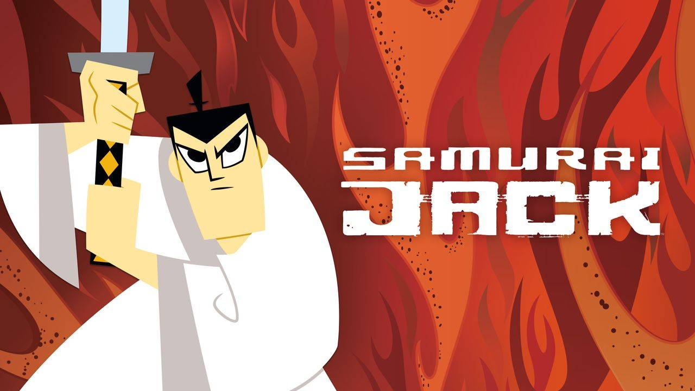
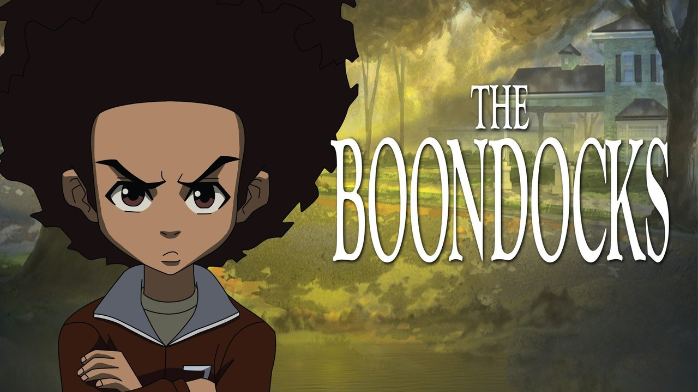
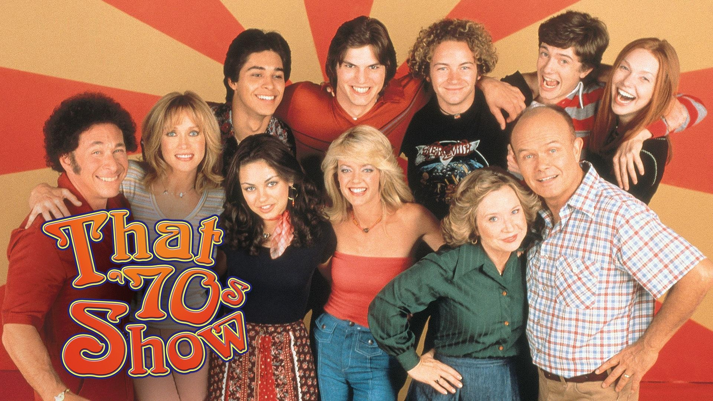
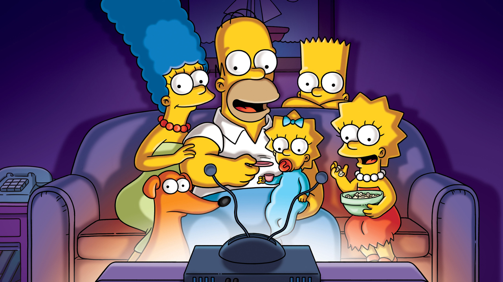
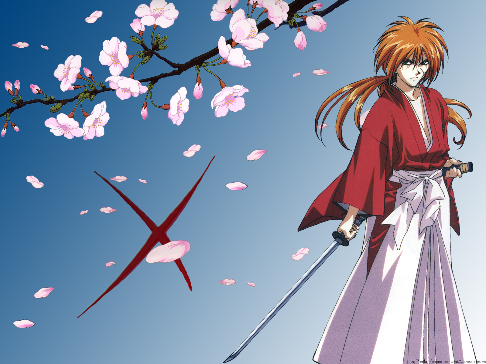

Samurai Jack
After being sent into the future by evil wizard Aku, young samurai Jack makes a quest to return to the past and undo the destruction caused by the wizard. Along the way Jack enlists allies to defeat some of Aku's henchmen and other villains before getting to the top dog to defeat him and find the portal that can return Jack to his own time.
Scroll to topThe Boondocks
Cantankerous Robert "Granddad" Freeman is the legal guardian of his grandsons, 10-year-old revolutionary Huey and 8-year-old Riley, a product of contemporary rap culture. After moving the family from Chicago's South Side to the safety of suburban Woodcrest -- aka the boondocks -- Granddad hopes to ignore the grandkids and enjoy his golden years in peace. But the kids have different plans, torturing each other and provoking others in the neighborhood. No matter how wild they get, Huey and Riley are no match for the eccentric elderly man.
Scroll to topThat 70's Show
Set in the mood ring and polyester era of the 1970s, the programme is a retro-hip situation comedy about an eclectic group of friends on the verge of adulthood. The group live in the suburbs of Wisconsin, where they yearn for independence amid the growing pains of becoming adults.
Scroll to topThe Simpsons
This long-running animated comedy focuses on the eponymous family in the town of Springfield in an unnamed U.S. state. The head of the Simpson family, Homer, is not a typical family man. A nuclear-plant employee, he does his best to lead his family but often finds that they are leading him. The family includes loving, blue-haired matriarch Marge, troublemaking son Bart, overachieving daughter Lisa and baby Maggie.
Scroll to topRurouni Kenshin
Rurouni Kenshin: Meiji Swordsman Romantic Story is a Japanese manga series written and illustrated by Nobuhiro Watsuki. The story begins during the 11th year of the Meiji period in Japan and follows a former assassin from the Bakumatsu, known as Hitokiri Battosai.
Scroll to top